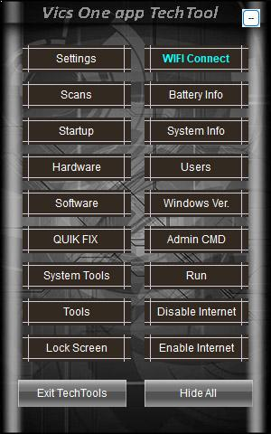
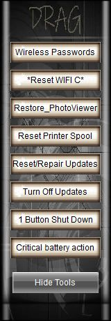
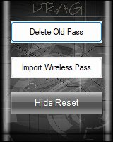
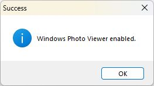
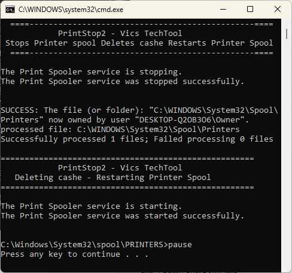
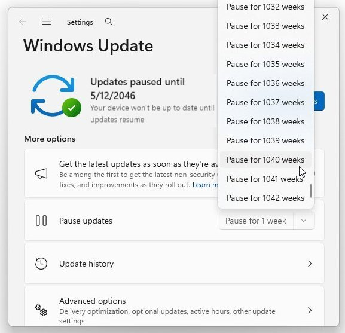
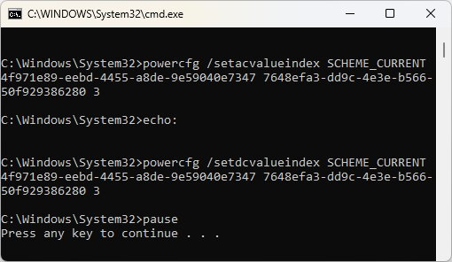
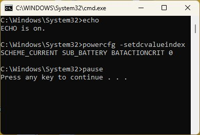

|
  |
Vics One app TechTool Tools Window1: Wireless Passwords 2: Reset WiFi C* 3: Restore Photo Viewer 4: Reset Printer Spool 5: Reset/Repair Updates 6: Turn off Updates 7: Power Button ShutDown 8: CriticalBattery Action |
| |
Vics One app TechTool 1- Wireless PasswordsImport and Export Wireless PasswordsThe command netsh wlan export profile folder="%~dp0\wifi\" key=clear is a Windows batch script instruction used to backup all saved Wi-Fi profiles on a computer to a specific folder, while revealing their passwords in plain text. |
| |
Vics One app TechTool 2- Reset WiFi C*Setup WIFI Connect to work with your shops wireless Internet Connect to a computer that already has the wireless password setup and set for auto connect, if none available then go ahead and set yours up now. Important to check box to connect automatically when setting up the password, Once setup return to TechTool/Tools/*Reset WIFI C* When pressed two options appear 1-Delete old passwords (Removes old wireless profiles stored) 2-Import Wireless Profiles (Imports the wireless password you just setup with auto connect) Important Note: this creates a wifi-s folder in the same directory as TechTool, this stores the wifi profiles that are used and the folder should be kept with the main program for WIFI Connect to work correctly. |
Vics One app TechTool 3- Restores Photo ViewerTo use the lightning-fast classic Windows Photo Viewer on Windows 10 or 11, you must activate it via the registry. Microsoft leaves the underlying program engine (PhotoViewer.dll) hidden inside clean installations. It only associates it with .tif files by default. |
Vics One app TechTool 4- Reset Printer SpoolReset the Windows Printer Spooler, Clear the stuck print queue files from your system storage and restart the spooler service. |
Vics One app TechTool 6- Pause Windows Updates for years |
Vics One app TechTool 7- Power Button Shut DownIf External Drives are bitlocked Keys will be stored on the C: drive |
echo:
powercfg /setacvalueindex SCHEME_CURRENT 4f971e89-eebd-4455-a8de-9e59040e7347 7648efa3-dd9c-4e3e-b566-50f929386280 3
echo:
powercfg /setdcvalueindex SCHEME_CURRENT 4f971e89-eebd-4455-a8de-9e59040e7347 7648efa3-dd9c-4e3e-b566-50f929386280 3
pause
Vics One app TechTool 8- Critical Battery Action OffCritical Battery Action - Power Management setting, if plugged up or on battery if low battery will hibernate - change to if plugged up do not hibernate |
echo powercfg -setdcvalueindex SCHEME_CURRENT SUB_BATTERY BATACTIONCRIT 0 pause